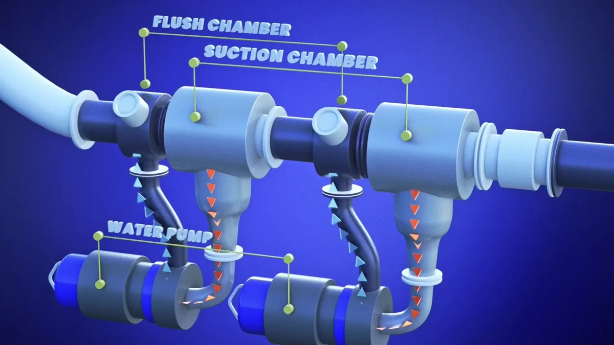
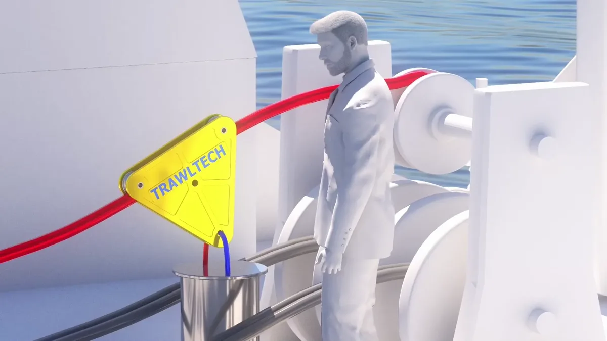
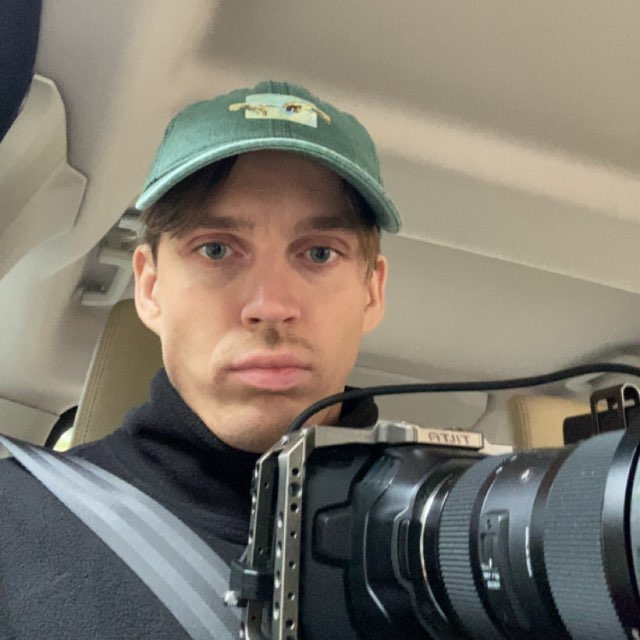

Sunlit Sea
Flytende solenergi. Nye perspektiver.
REVESPORET / LEIF VILJAR
3D · ANIMASJON · FILM
Dere bygger løsningene.
Jeg gjør dem synlige.
3D-animasjon og innhold som gjør teknologi enklere å forstå — og vanskeligere å glemme.
Utforsk prosjekter01 / UTVALGTE ARBEIDER
Fra havbruk til fornybar energi.
Teknologi, sett fra en ny vinkel.
Flytende solenergi. Nye perspektiver.
Detaljene som forklarer helheten.
Store løsninger, tydelig formidlet.

MARIN TEKNOLOGIÅpne Salmon Solutions UB, 3 bilderEn visuell inngang til havbruk.

MARIN TEKNOLOGIÅpne TrawlTech UB, 3 bilderTeknologien under overflaten.
02 / INNHOLDSPRODUKSJON
Film og innhold laget for å bli sett.
Et utvalg av mine arbeider for sosiale medier.

PERSONEN BAK REVESPORET03 / HEI, JEG ER LEIF VILJAR
Jeg lager visuelle historier for tech-, marine- og industribedrifter. Gjennom 3D, animasjon og film gjør jeg komplekse systemer, prosesser og produkter lettere å forstå.
Fra den første skissen til den ferdige filmen. Målet er alltid det samme: å bevare den faglige tyngden, og finne historien som gjør at folk følger med.
HAR DU EN IDÉ?
Ta en uformell prat om prosjektet ditt.
Ti minutter kan være en god start.